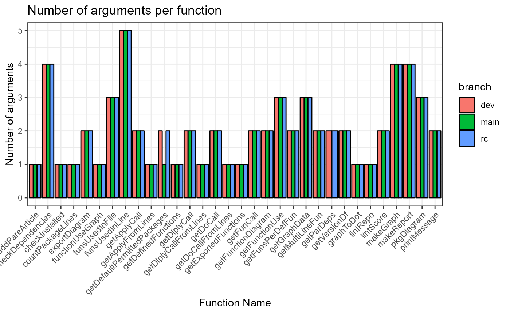
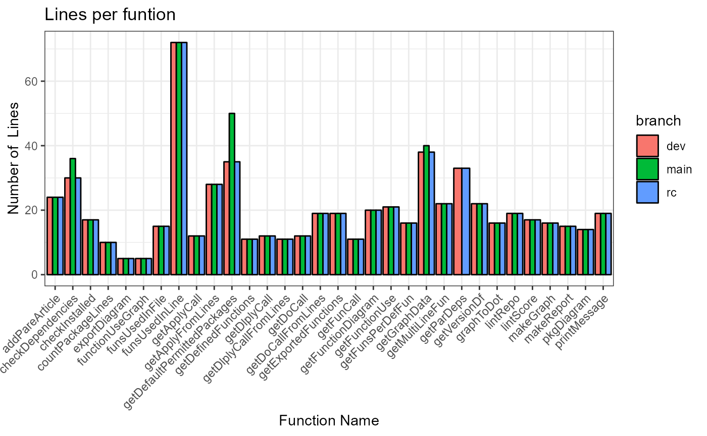

## cloning into 'C:\Users\MVANKE~1\AppData\Local\Temp\RtmpmME2KE/PaRe'...
## Receiving objects: 1% (16/1567), 63 kb
## Receiving objects: 11% (173/1567), 239 kb
## Receiving objects: 21% (330/1567), 1584 kb
## Receiving objects: 31% (486/1567), 3489 kb
## Receiving objects: 41% (643/1567), 6755 kb
## Receiving objects: 51% (800/1567), 7484 kb
## Receiving objects: 61% (956/1567), 9501 kb
## Receiving objects: 71% (1113/1567), 9557 kb
## Receiving objects: 81% (1270/1567), 9669 kb
## Receiving objects: 91% (1426/1567), 9669 kb
## Receiving objects: 100% (1567/1567), 10927 kb, done.
## Local: main C:/Users/mvankessel/AppData/Local/Temp/RtmpmME2KE/PaRe
## Remote: main @ origin (https://github.com/darwin-eu-dev/PaRe.git)
## Head: [294bd22] 2023-06-05: Merge pull request #35 from darwin-eu-dev/rc
## [1] "CRAN-SUBMISSION" "DESCRIPTION" "docs" "extras"
## [5] "inst" "man" "NAMESPACE" "NEWS.md"
## [9] "PaRe.Rproj" "pkgdown" "R" "README.md"
## [13] "README.Rmd" "vignettes"
Defined function properties


Depencies
##
[36mℹ
[39m Loading metadata database
[32m✔
[39m Loading metadata database ... done
## All dependencies are approved.
## All dependencies are approved.
## All dependencies are approved.